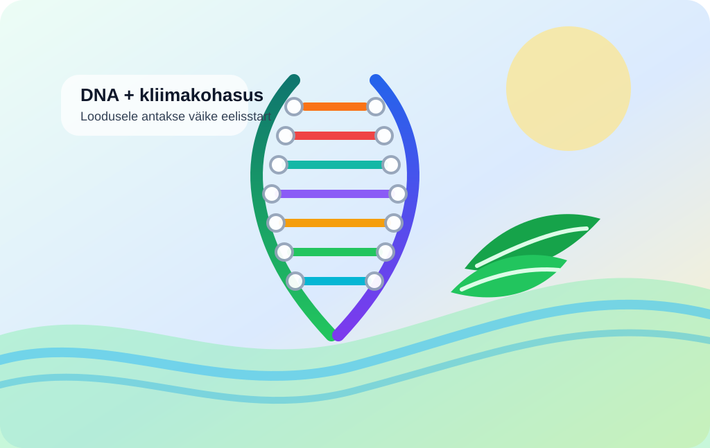

DNA aitab loodust kliimaga kohandada

Kliimamuutus ei oota, kuni ökosüsteemid end ümber seadistavad. AP kirjutab, et teadlased kasutavad konservatsioonigenoomikat — sisuliselt proovivad nad DNA abil välja selgitada, millised taimed ja elupaigad taluvad paremini kuumust, põuda ja haigusi.
Kalifornias uuritakse näiteks meriheina ja sekvoiate geene, sest mõlemad on olulised süsinikusidujad. Ka korallide taastamisel kasutatakse üha rohkem genoomikat, et mitte istutada värskelt kliimastressi alla sama õrna lahendust, mis juba eile läbi kukkus.
See pole mingi maagiline «probleem lahendatud» nipp. Pigem on see katse anda loodusele võimalus väikese eelisrajaga startida. Kliima ei muutu viisakalt ja looduskaitsel tuleb nüüd tegutseda umbes sama kiiresti nagu kliimasõnumid meie sotsiaalmeediasse jõuavad — ehk päris kiiresti.
Loe algallikat: AP News – "Climate change is outpacing evolution. Scientists are using DNA to catch up"
selle artikli sisu sõnastatud AI poolt: (mudel gpt-5.4-mini)